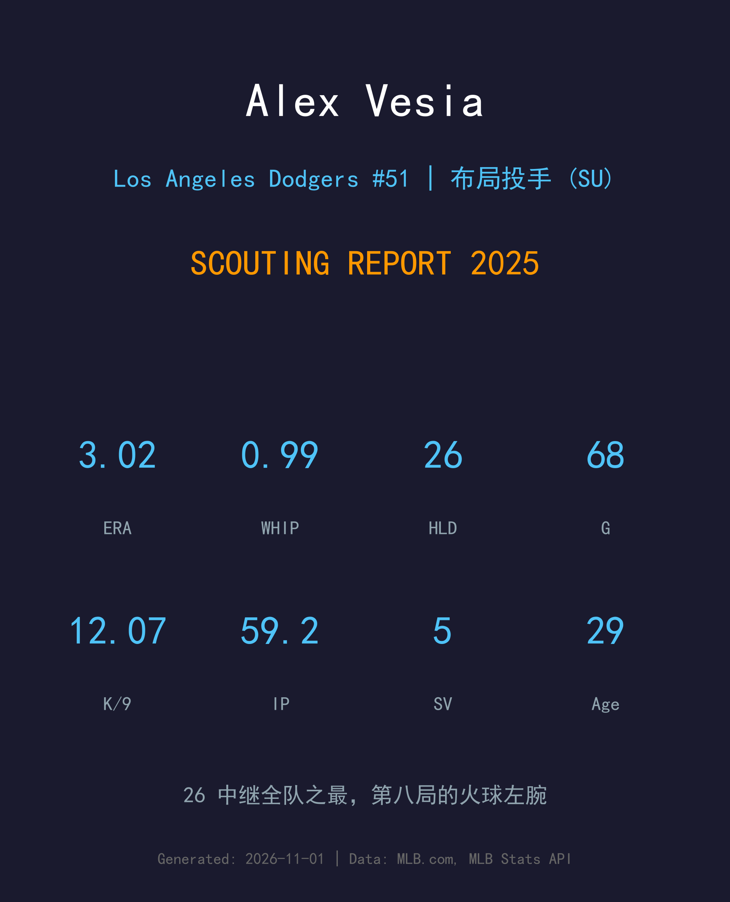
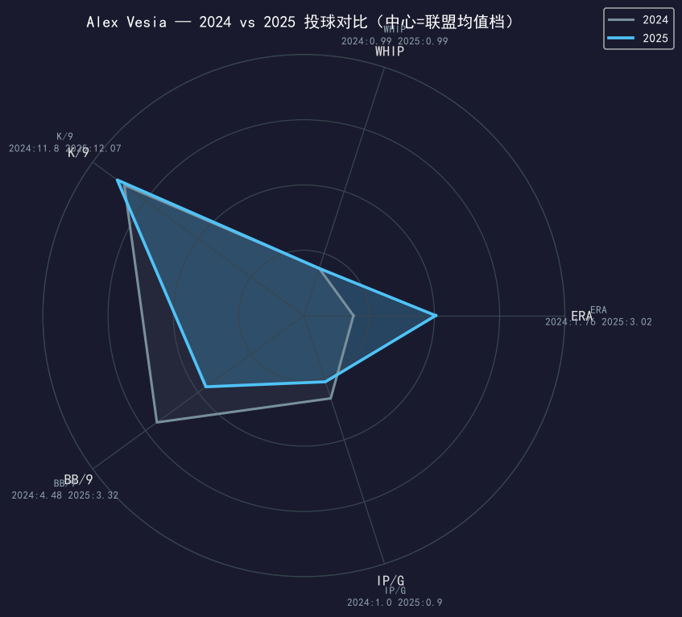
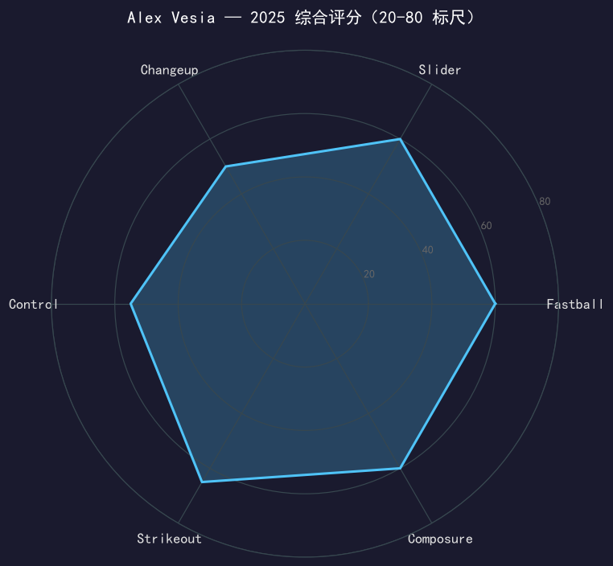

Los Angeles Dodgers #51 | 布局投手 | 左投 | 26 中继全队之最，第八局的火球左腕

Alex Vesia 是 2025 年道奇牛棚最可靠的那座桥：26 次中继成功全队最高，68 场出赛仅次于 Banda，把第七、第八局守得像上了锁。当终结者 Scott 陷入挣扎、季末又伤停时，是 Vesia 把「比赛最后六道出局数」的尊严扛在了左肩上。
2025 年：68 场、4 胜 2 负、5 次救援成功、3.02 自责分率、0.99 WHIP、12.07 的 K/9 全队牛棚最高。比起 2024 年 1.76 的 ERA 有回落，但 0.99 的 WHIP 原地不动，三振率还微幅上涨——这不是退步，是从「超常」回归「优秀」。
他的剧本很简单：两颗球（速球+滑球），一颗大心脏。在道奇星光璀璨的牛棚里，Vesia 是那种教练组会在比分牌最紧绷的时刻第一个想起的名字。
2020 年 7 月 25 日代表道奇登上大联盟，之后在交易中短暂离队、旋即回归——这段插曲没有打断他的 ascent，反而让他更清楚自己的归属。
67 场、1.76 自责分率、0.99 WHIP——从牛棚中段一步跨进高杠杆核心，成为道奇第八局的标准答案。
26 次中继成功领跑全队，季后赛 14 次登板、4 次中继成功随队夺冠——生涯 96 次中继记录着这条沉默的上升曲线。

| 赛季 | G | W-L | ERA | WHIP | IP | SO | BB | K/9 | HLD |
|---|---|---|---|---|---|---|---|---|---|
| 2024（爆发年） | 67 | 5-4 | 1.76 | 0.99 | 66.1 | 87 | 33 | 11.80 | 13 |
| 2025（中继王） | 68 | 4-2 | 3.02 | 0.99 | 59.2 | 80 | 22 | 12.07 | 26 |
0.99 的 WHIP 连续两年一模一样，这才是 Vesia 的真正底色——他控制比赛的方式不是靠零封，而是靠「不让任何人上垒」。2025 年的变化有二：BB/9 从 4.48 降到 3.32，控球明显精进；但 HR/9 从 0.95 涨到 1.36，几颗关键全垒打把 ERA 从 1 字头抬到 3 字头。中继成功从 13 翻倍到 26，则说明教练组把他的使用场景从「第六七局」升级到了「第七八局」——信任是最真实的进阶信号。
2025 赛季真实配球数据（MLB Stats API pitchArsenal）：
配球主体。球速不是联盟顶级，但出手点刁钻、进垒点敢于压好球带边缘，实战效果远超纸面均速。
两好球后的追杀主力，对右打者的横向位移锋利。速球滑球两球种配出 12+ 的 K/9，效率惊人。
零星使用打乱打者节奏的第三球种，若能提升占比与完成度，将是他迈向「无短板」布局投手的最后一块拼图。
WHIP 是后援投手最诚实的指标——ERA 可以被零星长打扭曲，但每局让多少人上垒骗不了人。Vesia 连续两年 0.99，意味着他每两局才让两个人上垒。在 2025 年这个全大联盟进攻回暖的年份，这份成绩单比 2024 年的 1.76 ERA 更有说服力。
BB/9 从 4.48 降到 3.32，22 次保送是生涯完整赛季新低。对于一个本来就靠三振吃饭的投手，控球进步意味着他可以更频繁地留在场内解决打者，而不是把自己逼进满垒再靠 K 逃脱——这正是 26 次中继成功背后的使用逻辑：教练组信任他处理「有人上垒」的复杂局面。
5 次救援成功、9 次机会——当 Scott 季末伤停，Vesia 已经在用实际行动预演终结者角色。以 2025 年 11 月的视角，道奇第九局的 2026 年答案至少有两个人选，而 Vesia 的年龄（29）、K/9（12+）与逐年进化的控球，都站在「竞争者」这一侧。

联盟顶级布局投手，第九局竞争者
A- 级 / 布局核心
道奇 2025 季后赛夺冠之路：外卡 2-0 红人 → NLDS 3-1 费城人 → NLCS 4-0 酿酒人 → 世界大赛 4-3 多伦多蓝鸟。
Vesia 全勤随队：14 次登板、2 胜 0 负、4 次中继成功，自责分率 3.86——是道奇夺冠牛棚里出场次数最多的人之一。
Alex Vesia 的 2025 年 11 月一片坦途：布局核心的位置无人撼动，第九局的门也已经推开了一条缝。29 岁的年龄、逐年精进的控球与联盟顶级的三振率，让他成为道奇牛棚未来三年规划里最稳的名字之一。
理想剧本：竞逐终结者角色，30 次救援 + 20 次中继的双料输出
现实基准：继续第八局核心，ERA 稳定在 2.5-3.0 区间
上行惊喜：若变速球进化，成为无短板的联盟顶级后援
Alex Vesia 来自南加州的阿尔派恩，是道奇自家出品的左投——2020 年在疫情缩短的赛季里登上大联盟。生涯初期他经历过被交易的漂泊，但在 2021 年重新回到洛杉矶后，他把这里变成了再也不会离开的家。
他的 ascent 不喧哗：每年把 BB/9 压低一点，每年把三振率抬高一点，每年把教练组的信任多攒一分。2024 年的 1.76 ERA 让全联盟注意到他，2025 年的 26 次中继则让他成为道奇牛棚计划里不可动摇的支柱。
在道奇这支习惯了巨星叙事的球队里，Vesia 书写的是另一种故事：不靠天赋惊艳，靠每年都在进步的确定性。2025 年 10 月末的世界大赛之夜，这位沉默的布局投手终于尝到了冠军的滋味——而这很可能只是开始。